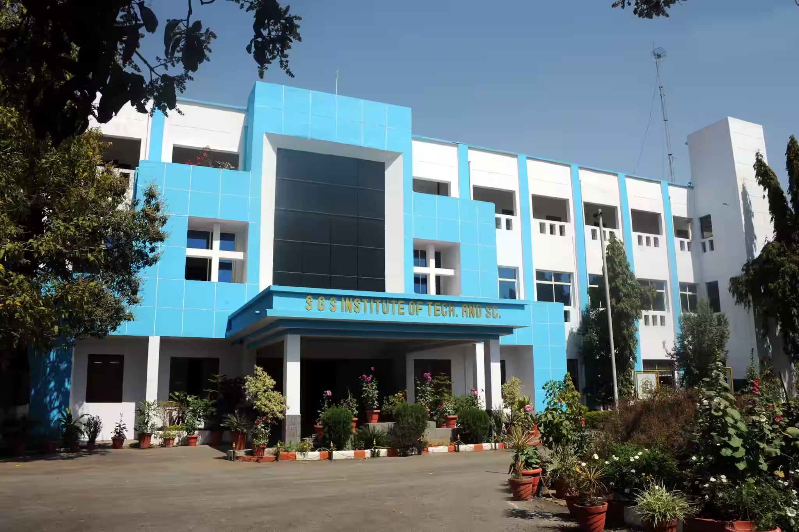
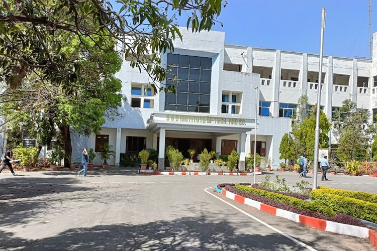

Labs, studios and projects that turn theory into working ideas.
Engineering excellence since 1952
Learn deeply.
Build boldly.
Lead responsibly.
Where rigorous engineering, meaningful research and an energetic student community come together in the heart of Indore.
NAAC‘A’ Grade
AutonomousInstitute
16Departments

01
Main academic block
SGSITS, Indore
74years of
impact
impact
Scroll to explore
This is SGSITS
A legacy of learning.
A legacy of learning.
A culture of making.
Shri Govindram Seksaria Institute of Technology and Science is an autonomous institute established in 1952 and run by the Government of Madhya Pradesh.
Across engineering, technology, sciences, management and pharmacy, SGSITS brings classroom fundamentals together with hands-on learning and research.
Explore our story →Inquiry shaped around useful, responsible and real-world outcomes.
Clubs, teams and collaborations that make campus life richer.
Find your directionProgrammes that move
Programmes that move
with the world.
Choose a path grounded in strong fundamentals, guided by experienced faculty and extended through projects, labs and industry exposure.
01
Engineering &
Technology
B.Tech programmes across core and emerging engineering disciplines.
Explore ↗02
Pharmacy
A practice-focused programme connecting pharmaceutical science and healthcare.
Explore ↗03
Postgraduate
study
M.Tech, MCA, MBA, M.Pharm and M.Sc. pathways for deeper specialisation.
Explore ↗04
Research &
doctoral study
Advanced inquiry supported by supervisors, facilities and collaborations.
Explore ↗
Our academic community
16 departments.
16 departments.
One shared purpose.
Interdisciplinary thinking starts with strong disciplines. Explore the teaching and research communities across SGSITS.
01 Computer Engineering →
02 Information Technology →
03 Mechanical Engineering →
04 Electrical Engineering →
05 Civil Engineering & Applied Mechanics →
06 Electronics & Telecommunication →
07 Biomedical Engineering →
08 Electronics & Instrumentation →
09 Industrial & Production Engineering →
10 Computer Technology & Applications →
11 Management Studies →
12 Pharmacy →
13 Applied Chemistry →
14 Applied Mathematics & Computational Sciences →
15 Applied Physics & Optoelectronics →
16 Centre for Bhartiya Gyan Parampara →
Campus pulseNews, ideas &
View notice centre →
News, ideas &
what’s next.

CampusA campus built for ideas, collaboration and everyday discovery
Explore laboratories, learning spaces, student chapters and the people who make SGSITS feel alive.
Read the campus story ↗24SEP
2026
2026
Workshop
Hands-on innovation and prototyping workshop
Advanced Technology Centre · 10:00 AM
08OCT
2026
2026
Seminar
Research conversations across disciplines
Golden Jubilee Auditorium · 11:30 AM
15OCT
2026
2026
Students
Clubs and chapters open house
Central Lawn · 4:00 PM
Stay informed
Notice centre
Research at SGSITS
Curiosity, shaped
Curiosity, shaped
into consequence.
Our research interface brings together supervisors, scholars, publications, patents, funded projects and consultancy—making work easier to discover and connect with.
Find a researcherBeyond the classroomReady for the work
Ready for the work
that matters.
The Training & Placement Office connects students, departments and recruiting organisations while supporting professional readiness.
PLACEMENT / 2026
Student outcomes,
Student outcomes,
told with clarity.
A dedicated, filterable placement showcase for verified student stories, recruiters, roles and annual reports.
01 / 03
CE
Computer EngineeringProduct & software engineering
Verified alumni outcomes and recruiter details can be published here through the admin portal.
Explore outcomes ↗ME
Mechanical EngineeringCore engineering & operations
Show department-specific roles, student journeys and training initiatives in one consistent format.
Explore outcomes ↗IT
Information TechnologyTechnology & analytics
Highlight verified placements without losing access to brochures, reports and recruiter information.
Explore outcomes ↗TechnologyEngineeringConsultingAnalyticsResearchPublic sector
People make
the place.Faculty · Staff · Scholars · Alumni
the place.Faculty · Staff · Scholars · Alumni
Meet the communityExpertise you can
Expertise you can
actually find.
Searchable profiles help students, collaborators and visitors discover faculty, staff, research scholars and alumni by department and area of work.
Your next chapterBring your questions.
Bring your questions.
Bring your ambition.
Explore undergraduate, postgraduate and doctoral pathways at SGSITS. Find eligibility, seat information, timelines and official admission resources in one place.
Explore admissions ↗Life at SGSITSThirty acres.
Thirty acres.
Countless directions.
From student chapters and cultural teams to sports, workshops and everyday conversations—the campus gives ideas room to meet.
23, Sir M. Visvesvaraya Marg
Indore, Madhya Pradesh
Indore, Madhya Pradesh